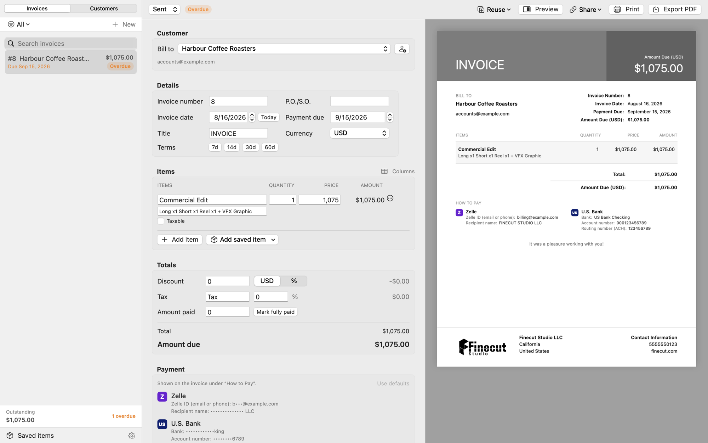
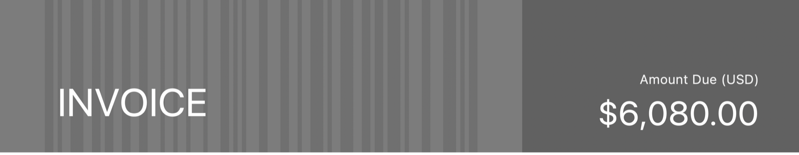

InvoiceGen writes, prints and tracks invoices entirely offline. No account, no subscription, no server holding your clients and your bank details.
Download for macOS
Edit on the left, the finished page on the right — updating as you type.
Enough to run a freelance practice, and deliberately nothing more.
No network calls while you work. Your invoices, clients and payment details are files on your disk, not rows in someone else's database.
Vector output at US Letter, paginated the way a printer expects. Export, print, or hand the file straight to a client.
Account and routing numbers live in an AES-GCM vault keyed to your Mac's Keychain, masked until you authenticate, with every change logged.
Select many invoices and set status, archive, duplicate or trash them at once — as a single step you can undo in one go.
Finished work moves out of the way by year. Deleting is reversible until you empty the trash, so a mis-click costs nothing.
Share your customer list across your Macs through iCloud Drive. Invoices and payment details stay local by design.
An invoice is a financial document, and a PDF is trivially editable. InvoiceGen prints a verification mark into the design itself.

The mark is an HMAC-SHA256 signature over four fields — invoice number, date, total quantity and total amount — keyed by a passphrase only you know. It reads as part of the banner rather than as a barcode bolted onto the page.
Open a PDF in Verify Invoice… and the app reads the page's own printed numbers, recomputes the signature and says whether they still agree. Change the total in a PDF editor and the check fails — the signature no longer matches the figure on the page.
The key never leaves your Mac, so nobody else can mint a valid mark — including us, because there is no us.
The whole app is a few thousand lines of Swift you can read in an afternoon.
Builds are signed with a Developer ID and notarized by Apple, so macOS opens them without complaint. Updates arrive in the app itself and are refused unless signed by the same identity — the check is derived from the running app's own signature, so it cannot drift.
Source, releases and the full history: github.com/Justbehappycat/InvoiceGen